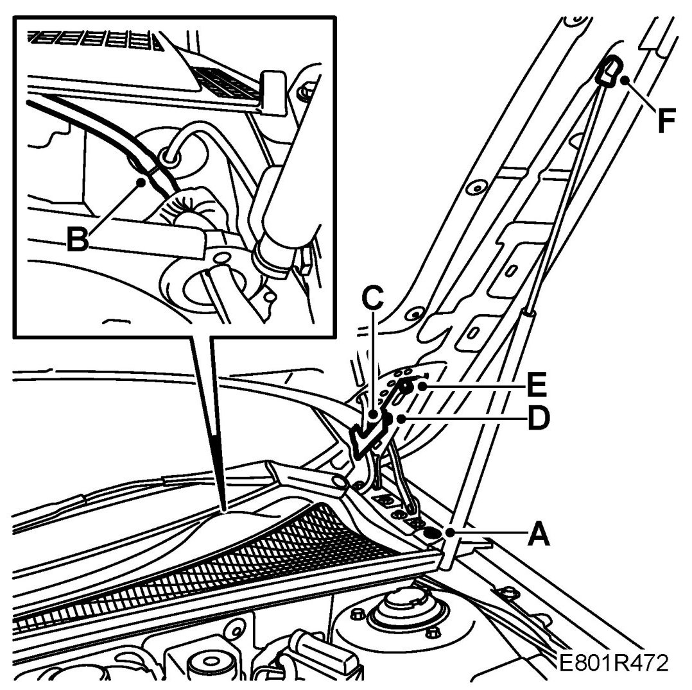

Hood: Service and Repair
Bonnet
To remove
NOTE: It is recommended that 2 people carry out certain steps.
1. Open the bonnet.
2. Loosen the rear left bonnet seal slightly.
3. Remove the clip (A) on the cowl cover and lift the cover slightly.

4. Detach the washer hose quick coupling (B).
5. Remove the covers (C) for the hinges.
6. Remove the bonnet's lower bolts (D).
7. Loosen the upper bolts (E).
8. Loosen the bonnet damper's upper mounting (F) in the bonnet, locked with a clip. Lay the damper down so as not to damage the paintwork.
9. Lift off the bonnet.
To fit
NOTE: It is recommended that 2 people carry out certain steps.
1. Thread the bolts (E)
2. Lift the bonnet back in place.
3. Thread the bolts (D).
4. Fit the bonnet damper's upper mounting (F) in the bonnet.
5. Tighten the bolts (D and E).
6. Fit the hose on the hinge cover (C).
7. Connect the washer hose to the quick coupling (B).
8. Fit the cowl cover's clips (A).
9. Fit the rear bonnet seal.
10. Check the fit of the bonnet and the operation of the bonnet lock and washers.